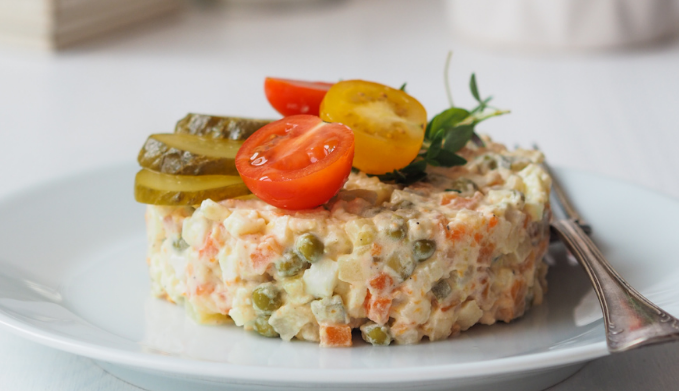

– 3 marchewki
– 2 pietruszki
– połowa selera korzeniowego
– 3 ziemniaki
– 2 jabłka
– 3-4 ugotowane na twardo jaja
– 5 ogórków kiszonych, polecam Ci przepis na ogórki kiszone
– 1 puszka zielonego groszku
– 4 łyżki majonezu
– 2 łyżeczki musztardy sarepskiej
– pieprz, sól
– liść laurowy, ziele angielskie
1.Do przygotowania sałatki możesz użyć warzyw ugotowanych wcześniej w rosole, zajrzyj do mojego przepisu na rosół domowy.
2.Jeśli gotujesz warzywa specjalnie do sałatki, zrób następujące czynności: marchewki, pietruszki i seler obierz, włóż do garnka wraz z przyprawami: listkiem laurowym, zielem angielskim, solą i pieprzem. Zalej wodą i ugotuj przez około 30 minut, aż warzywa staną się miękkie.
3.Ugotuj ziemniaki i pozostaw do ostygnięcia. Jaja ugotuj na twardo, przestudź i obierz ze skorupek.
4.Pokrój wszystkie ugotowane warzywa w bardzo drobną kostkę. Posiekaj także jaja, ogórki kwaszone (nie musisz ich obierać ze skóry), obrane jabłko. Dodaj zielony groszek, a następnie majonez, musztardę oraz sól i pieprz do smaku. Jeśli sosu jest za mało dodaj jeszcze nieco majonezu. Sałatkę przechowuj w lodówce w zamkniętym pojemniku lub słoiku.
